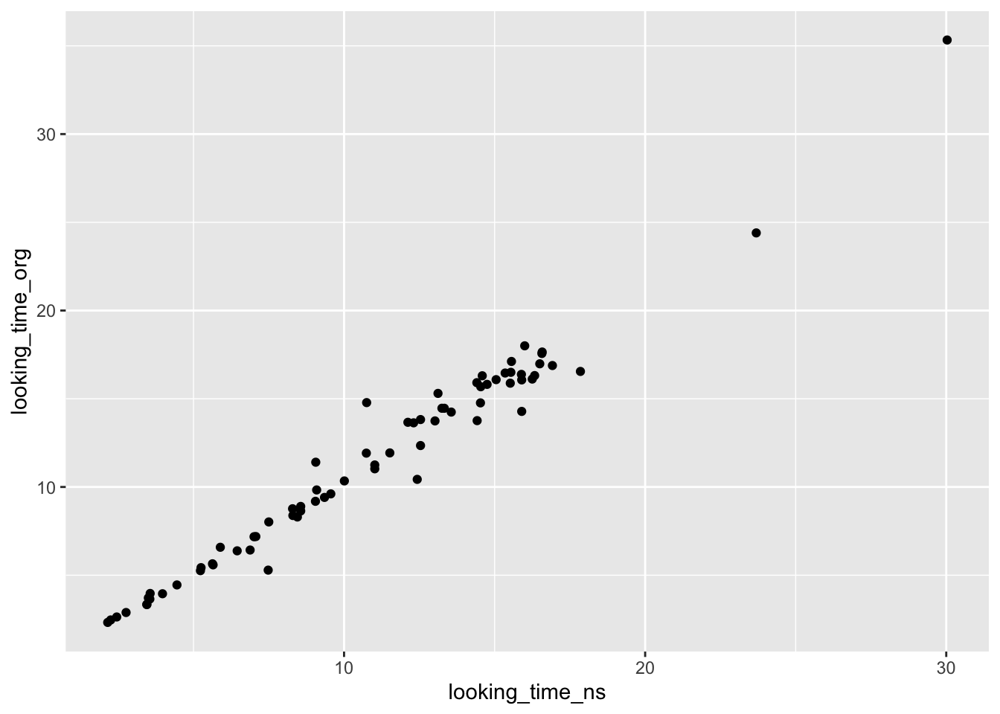
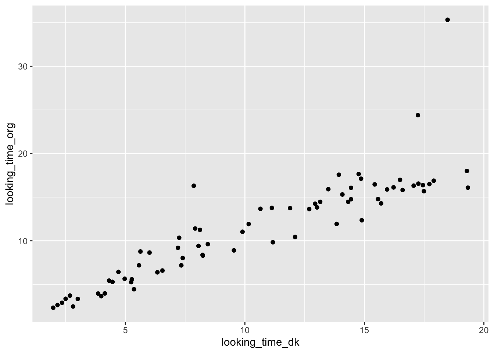
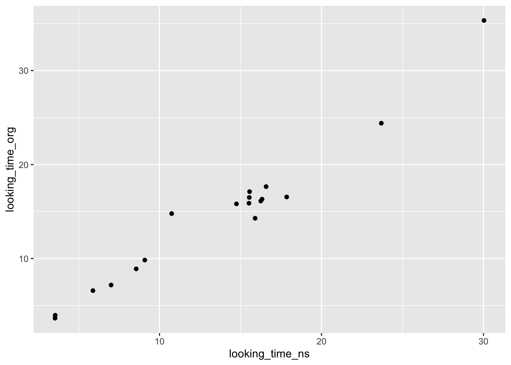
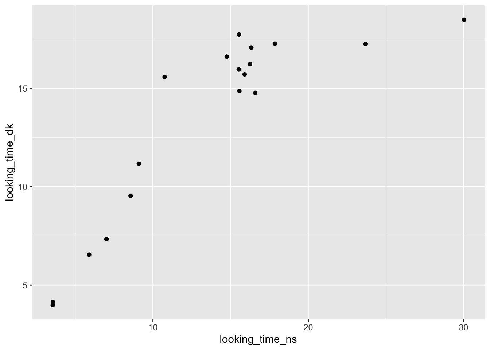
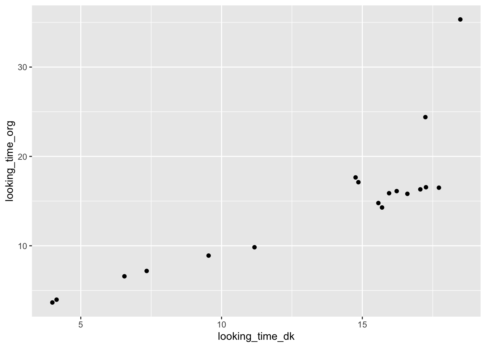

Chapter 8 Interrater reliability
Interrater reliability refers to the consistency between different rater’s observations of the same thing.
Here I am going to show you how to measure interrater reliability using the ManyBabies looking time data. You should remember that the ManyBabies project operationalized infant preference as the amount of time the babies looked at a screen.
This file contains my looking time data, the ManyBabies’s looking time data, and the data of a “group member”, DK (I do not have a group, so I used the data from a student who email it to me to see if it was right). Note that this is three versions of the same data. We all watched the same babies and recorded their looking time for each trail.
We will use the scatterplot and a correlation coefficient to assess interrater reliability because looking time is on a continuous scale. Scatterplots and correlation coefficients show the associations between variables, or observations.
When measuring interrater reliability of a categorical variable, you should use percent agreement or Cohen’s Kappa, which is percent agreement corrected for chance agreement.
First load the necessary packages:
Then load the data:
8.1 Data analysis
8.1.1 Scatterplot
First create scatterplots of the relation between the 3 observations.
- My looking times and the ManyBabies looking times:

The scatterplot shows a strong positive relation between the two independent ratings of the baby’s looking time. All data points are within the range of possible values. (though it does look like there is an outlier - I am consistent with ManyBabies in identifying it. What to do about the outlier is a separate issue. I would hope it was a trail period because then that data will not be used anyway.)
- My looking times and the looking times of my group member, DK:

The scatterplot also shows a strong positive relation between my measurements of infant’s looking times and DK’s measurements. Again, maybe an outlier or two. But DK and I are in a fair amount of agreement about them.
- DK’s looking times and the ManyBabies looking times:

This scatterplot also shows a strong positive relation. DK’s measurements of infant’s looking times are consistent with the ManyBabies’s looking times. (Good job DK!)
NOTE that you will have more scatterplots because you will have more group members.
8.1.2 Correlation coefficient
Next let’s create a correlation matrix of the three observations. We will use the corr.test() function to calculate the correlation coeffients, confidence intervals and NHST (Null Hypothesis Significance Testing). The corr.test() function is part of the Psych package and the organization of the code uses Tidyverse.
Here is what the code will look like:
irr %>%
select(looking_time_ns, looking_time_org, looking_time_dk) %>%
corr.test() %>%
print(short=FALSE)
- The
irrtells R to use the data in the irr object
- the
select()selects the variables that we want to include in the correlation matrix. Without this, every variable in the irr dataset would be included in the correlation matrix.
- Add
method="spearman"within thecorr.test()parentheses for ranked data (For example:corr.test(method = "spearman"))
- The
short = FALSEin theprint()parentheses prints the confidence intervals
- Use
?corr.testfor more options
irr %>%
select(looking_time_ns, looking_time_org, looking_time_dk) %>%
corr.test() %>%
print(short=FALSE)## Call:corr.test(x = .)
## Correlation matrix
## looking_time_ns looking_time_org looking_time_dk
## looking_time_ns 1.00 0.99 0.90
## looking_time_org 0.99 1.00 0.89
## looking_time_dk 0.90 0.89 1.00
## Sample Size
## [1] 72
## Probability values (Entries above the diagonal are adjusted for multiple tests.)
## looking_time_ns looking_time_org looking_time_dk
## looking_time_ns 0 0 0
## looking_time_org 0 0 0
## looking_time_dk 0 0 0
##
## Confidence intervals based upon normal theory. To get bootstrapped values, try cor.ci
## raw.lower raw.r raw.upper raw.p lower.adj upper.adj
## lkng_tm_n-lkng_tm_r 0.98 0.99 0.99 0 0.97 0.99
## lkng_tm_n-lkng_tm_d 0.85 0.90 0.94 0 0.84 0.94
## lkng_tm_r-lkng_tm_d 0.83 0.89 0.93 0 0.83 0.93The first table in the output is the correlation matrix. Each number/cell in the correlation matrix shows the correlation between two variables. The coefficients above and below the diagonal (the 1.00s that go from the top left to bottom right) are redundant.
The correlation between my looking times and the ManyBabies looking times is .99, and the correlation between my looking times and DK’s looking times is .90. The correlation between DK and the ManyBabies looking times is .89.
The next table shows the probability associated with the correlation coefficients listed in the first table. These probabilities are the p-values from null hypothesis significance testing (NHST). NHST estimates the likelihood of getting results as extreme or more extreme given the null is true (i.e., given there is really no association between the variables). If this likelihood is sufficiently small (less than 5%), than we reject the null hypothesis and conclude that the association is more extreme than zero.
The results show that the p-values associated with the correlation coefficients are all 0, which means that they are less than .001 (the default is for R to report 0 if the number is sufficiently small - but we know that 0 is never an option in NHST because the tails of the distribution are asymptotic). Since any number under .001 is also under the .05 threshold - all of the correlation coefficients are statistically significant in terms of NHST.
The last table shows the confidence intervals. The confidence interval provides an interval estimate of a parameter. Here the parameter is the true correlation between two observations. This range fairly often contains the true association (population level) between the variables.
In the present example, the correlation coefficient between mine and the ManyBabies looking time (r = .99) is a point estimate of the true association between mine and the ManyBabies looking time. The confidence interval (CI) gives us an interval estimate of this association (.98 to .99). I found the CI in the lkng_tm_n-lkng_tm_r row (RStudio automatically deletes the vowels from variables with long names to save space). This confidence interval is quite small, indicating a high amount of certainty about the true size of the association between mine and the ManyBabies looking time. A large confidence interval indicates uncertainty about the true size of an association.
The confidence interval for the correlation between my looking times and DK’s looking times (lkng_tm_n-lkng_tm_d) is .89 and .94. The point estimate of this relation is .90 and the interval estimate is between .89 and .94.
The confidence interval for the correlation between the DK and ManyBabies looking times (lkng_tm_r-lkng_tm_d) is .83 and .93.
8.1.2.1 APA-style write up of correlation results
There was a strong positive correlation between my looking time data and the ManyBabies looking time data (r = .99, p < .001, CI.95 = .98 to .99) and between my looking time data and DK’s looking time data (r = .90, p < .001, CI.95 = .89 to .94).
8.2 Data analysis by participant
Then create the same scatterplots and correlation matrix for each baby In the event of low interrater reliability, it might be that raters were in more agreement for some babies than others.
To do this you will have to use the filter() function of the tidyverse package, which creates subsets of a data frame. That is, filter() allows you to select certain rows in a dataset.
There are many functions and operations that can be used inside filter() to construct the filter expression.
We will be using == which means equal to. There is also >, >=, &, |, etc.
The command to select the looking times of the baby labeled sub5 is:
- The
sub5 <-part of the command saves the subsample into a new data object called sub 5.
subid == 5tells are to select all of the rows that have5in the column labeledsubid
After this is run, there will be a new object in the environment called sub5. It has 18 observations (which is the number of trials in the ManyBabies study) and it has the same 7 variables in it that the irr dataset had (just only for subid 5).
Next create new data objects for the other 3 babies:
sub12 <- irr %>%
filter(subid == 12)
sub25 <- irr %>%
filter(subid == 25)
sub33 <- irr %>%
filter(subid == 33)8.2.1 Scatterplot
Then create scatterplots of the relation between the looking time data by each baby.



The scatterplots look pretty consistent to me.
8.2.2 Correlation coefficient
Then create correlation matrix of the three looking times separately for each baby:
sub5 %>%
select(looking_time_ns, looking_time_org, looking_time_dk) %>%
corr.test() %>%
print(short=FALSE)## Call:corr.test(x = .)
## Correlation matrix
## looking_time_ns looking_time_org looking_time_dk
## looking_time_ns 1.00 0.99 0.98
## looking_time_org 0.99 1.00 0.99
## looking_time_dk 0.98 0.99 1.00
## Sample Size
## [1] 18
## Probability values (Entries above the diagonal are adjusted for multiple tests.)
## looking_time_ns looking_time_org looking_time_dk
## looking_time_ns 0 0 0
## looking_time_org 0 0 0
## looking_time_dk 0 0 0
##
## Confidence intervals based upon normal theory. To get bootstrapped values, try cor.ci
## raw.lower raw.r raw.upper raw.p lower.adj upper.adj
## lkng_tm_n-lkng_tm_r 0.98 0.99 1.00 0 0.97 1.00
## lkng_tm_n-lkng_tm_d 0.95 0.98 0.99 0 0.95 0.99
## lkng_tm_r-lkng_tm_d 0.96 0.99 1.00 0 0.96 1.00sub12 %>%
select(looking_time_ns, looking_time_org, looking_time_dk) %>%
corr.test() %>%
print(short=FALSE)## Call:corr.test(x = .)
## Correlation matrix
## looking_time_ns looking_time_org looking_time_dk
## looking_time_ns 1.00 0.98 0.87
## looking_time_org 0.98 1.00 0.83
## looking_time_dk 0.87 0.83 1.00
## Sample Size
## [1] 18
## Probability values (Entries above the diagonal are adjusted for multiple tests.)
## looking_time_ns looking_time_org looking_time_dk
## looking_time_ns 0 0 0
## looking_time_org 0 0 0
## looking_time_dk 0 0 0
##
## Confidence intervals based upon normal theory. To get bootstrapped values, try cor.ci
## raw.lower raw.r raw.upper raw.p lower.adj upper.adj
## lkng_tm_n-lkng_tm_r 0.94 0.98 0.99 0 0.93 0.99
## lkng_tm_n-lkng_tm_d 0.67 0.87 0.95 0 0.63 0.96
## lkng_tm_r-lkng_tm_d 0.59 0.83 0.93 0 0.59 0.93sub25 %>%
select(looking_time_ns, looking_time_org, looking_time_dk) %>%
corr.test() %>%
print(short=FALSE)## Call:corr.test(x = .)
## Correlation matrix
## looking_time_ns looking_time_org looking_time_dk
## looking_time_ns 1.00 0.98 0.89
## looking_time_org 0.98 1.00 0.88
## looking_time_dk 0.89 0.88 1.00
## Sample Size
## [1] 18
## Probability values (Entries above the diagonal are adjusted for multiple tests.)
## looking_time_ns looking_time_org looking_time_dk
## looking_time_ns 0 0 0
## looking_time_org 0 0 0
## looking_time_dk 0 0 0
##
## Confidence intervals based upon normal theory. To get bootstrapped values, try cor.ci
## raw.lower raw.r raw.upper raw.p lower.adj upper.adj
## lkng_tm_n-lkng_tm_r 0.95 0.98 0.99 0 0.94 0.99
## lkng_tm_n-lkng_tm_d 0.73 0.89 0.96 0 0.69 0.96
## lkng_tm_r-lkng_tm_d 0.71 0.88 0.96 0 0.71 0.96sub33 %>%
select(looking_time_ns, looking_time_org, looking_time_dk) %>%
corr.test() %>%
print(short=FALSE)## Call:corr.test(x = .)
## Correlation matrix
## looking_time_ns looking_time_org looking_time_dk
## looking_time_ns 1.00 0.99 0.96
## looking_time_org 0.99 1.00 0.98
## looking_time_dk 0.96 0.98 1.00
## Sample Size
## [1] 18
## Probability values (Entries above the diagonal are adjusted for multiple tests.)
## looking_time_ns looking_time_org looking_time_dk
## looking_time_ns 0 0 0
## looking_time_org 0 0 0
## looking_time_dk 0 0 0
##
## Confidence intervals based upon normal theory. To get bootstrapped values, try cor.ci
## raw.lower raw.r raw.upper raw.p lower.adj upper.adj
## lkng_tm_n-lkng_tm_r 0.97 0.99 1.00 0 0.96 1.00
## lkng_tm_n-lkng_tm_d 0.89 0.96 0.99 0 0.89 0.99
## lkng_tm_r-lkng_tm_d 0.94 0.98 0.99 0 0.93 0.99Again, the associations between the raters seemed pretty consistent across the babies.
8.3 Overall conculsion
Based on the scatterplots and correlation coefficients we can conclude that the looking time variable has strong interrater reliability. It seems that 3 independent observers are in agreement about when the babies are looking at the screen.